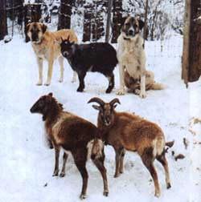
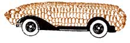

Bits and Pieces
A Turkish dog comes to the rescue of a Colorado family plagued by mountain lions.
Living with the Colorado Mountain Lion
For many years my family lived just outside Durango, Colorado, surely one of the most beautiful places in the United States to set up a household and raise children. Armed with years of experience tending a cattle farm, we became a ranching family and gambled on deriving all the household income from raising beef cattle.
I was on my way to the mailbox one winter morning a few years after we moved in, when I saw my first set of mountain lion tracks. I was thrilled, eager to catch sight of this "rare" and "shy" predator that I'd heard so much about from the news and public television. How naive I was. Just a few weeks after seeing those tracks in the snow, I lost my first head of cattle-its 2,000 lb of bone and muscle crisscrossed with the claw marks and jagged bite wounds of the mountain lion.
In the months that followed, we lost thousands of dollars in exotic livestock and on several occasions came very close to being attacked ourselves. The lions that hunted our property showed no fear of humans whatsoever. They walked up our driveway in broad daylight, attacked our animals and pets at random, and ignored our shouts, our sticks, and our dogs as we futiley tried to drive them away. Late one fall afternoon, a house guest of ours pulled into our driveway only to have a lion jump onto the car roof and paw at the windows.
We were not the only family experiencing problems. After getting a few neighbors together to discuss our cattle losses, I learned that my family was lucky. Our closest neighbor, who raises Red Angus cattle, was so plagued by lion kills that they were compelled to move their yearlings into an enclosed pen next to their house, and to illuminate the pen with floodlights all night long. Less than a week after using the pen, they awakened to find every one of the animals in the pen killed or badly maimed by lions. Last, an acquaintance who lived some miles away told of her husband being attacked as he bent down to open the water spigot in his field. It was difficult to imagine that this man posed a threat to, or cornered the lion in any way, while he was standing in the middle of his field.
I don't intend to wage war against the mountain lion. In their natural habitat, they are magnificent creatures. And their reasons for a newly expressed aggression against humans and cattle are clear; loss of natural territory to man, combined with protection from hunting, have made the once dwindling lion and cougar a more pronounced presence both in the wild as well as the `burbs. But we had to find a way to protect our property and children.
An answer finally came from a fellow rancher who had some luck with guard dogs. "Our dogs have never been able to do a thing," I replied. "One was even killed when it gave a lion some trouble:" He assured me that the dogs he was referring to, Anatolian shepherds, were not run-of-the-mill housepets, but some very serious animals. He further said that since buying his first pair of Shepherds, he hadn't had a single loss. I was sold.
I was surprised to find that when Boaz and Tess arrived at my house, they weren't the snarling, drooling hounds of hell that I had anticipated, but simply large, handsome, and surprisingly friendly dogs. Specifically bred in their native Turkey for the purpose of defending property and cattle against intruders only, these 150-1b. dogs identify with owners remarkably well and are particularly gentle around children. Furthermore, they are bred to intimidate first and foremost, and to attack only if necessary. So they pose little threat to those people who wander mistakenly onto the property. Backing off will solve the problem immediately. There were several occasions when we know the dogs and lions faced off, because we could hear the lion's snarls over the dogs' growling, but we never found any dead or injured lions, a testament to how intimidating they are.
Not only have we not suffered another lion kill, the dogs have also been effective as protection against coyotes, stray dogs, skunks, hawks, eagles ...even rattlesnakes. I heartily recommend them to any home that is forced to share space with predators as an alternative to the gun. Though not exactly cheap at anywhere from $500 to $1,000 each, they will pay for themselves, by saving the life of just one head of cattle. Contact the Anatolian Shepherd Dog Club for more information on Anatolian shepherd availability in your area.
- Kris Bryant
Corn is not only a favorite at summertime barbecues, but also a major source of ethanol. Under a cooperative research and development agreement with the National Renewable Energy Laboratory (NREL) in Golden Colorado, and the New Energy Company of Indiana, some surprising advances have been made in boosting the efficiency of the traditional dry milling process of corn. They have discovered a new process that makes ethanol extraction 13% more efficient.
The traditional dry milling process breaks down the starches in the corn kernel with enzymes and then ferments the sugars with distiller's yeast to make ethanol. Because the starch makes up only 72% of the corn kernel, the new process uses the leftover stillage from the distillation process, which contains starch, fats, fibrous material (cellulose, lignin, and hemicellulose), and protein. The fiber is then taken from the stillage, broken into sugar, fermented, and the ethanol is again extracted. The remainder becomes feed.
The purpose of ethanol is not to replace gasoline, but to make existing supplies of the fossil fuel last longer. It could also make a significant contribution to the cause of reducing pollution. When added to gasoline, ethanol boosts octane and reduces carbon monoxide emissions. NREL is now conducting experiments with a variety of resources, such as switchgrass and trees that can be harvested at short interval, in hopes of getting the same results. The main problem with using the new process is that, for the time being, the ethanol extract is more expensive than gasoline. The cooperative's next task is to address that economic issue. It is certainly a step in the right direction, however.
Those chestnuts roasting on the open fire at Christmas were probably Italian. Thanks to a turn of the century blight-a devastating fungus that all but wiped out the American variety-foreign nuts have played an increasingly large role in nationwide chestnut sales. But University of Florida researchers say an experiment is under way that may help pull American chestnuts out of the fire; or maybe put them back in again. They have been successful recently in growing a hybrid chestnut resistant to the blight. "There's a huge potential for commercial production of chestnuts in our country." said Gary Brinen, a UF extension agent.
Labeled the Dunstan chestnut, the hybrid was initially developed by breeder Robert Dunstan in the 1950s by crossing a single blight-resistant chestnut growing in Ohio with a Chinese variety also naturally resistant. Dunstan's grandson, R. D. Wallace, has finished development by growing 100 acres of blight-free chestnuts in his tree nursery in Alachua, Florida. He reports that the new Dunstan trees produce sweet, flavorful nuts superior in taste and size to both foreign breeds and even their original American cousins.
Before the blight, chestnuts were an important source of food for the early settlers, natives, and wildlife of North America. Now Americans consume less than one ounce of chestnuts per person annually. "One out of four trees in North America was an American chestnut before the fungus from Asia attacked their bark and branches in 1904, wiping out just about every chestnut tree by the early 1940s," Brinen said. "We lost about 3.5 billion trees during that time."
Active tree planters interested in information on the Dunstan chestnut can call R. D. Wallace at 1-800-669-2067.
- Jani Spede
|
 Anatolian shepherds ""Tess"" and ""Boaz"" on guard duty at the Bryant Farm |
 |
|